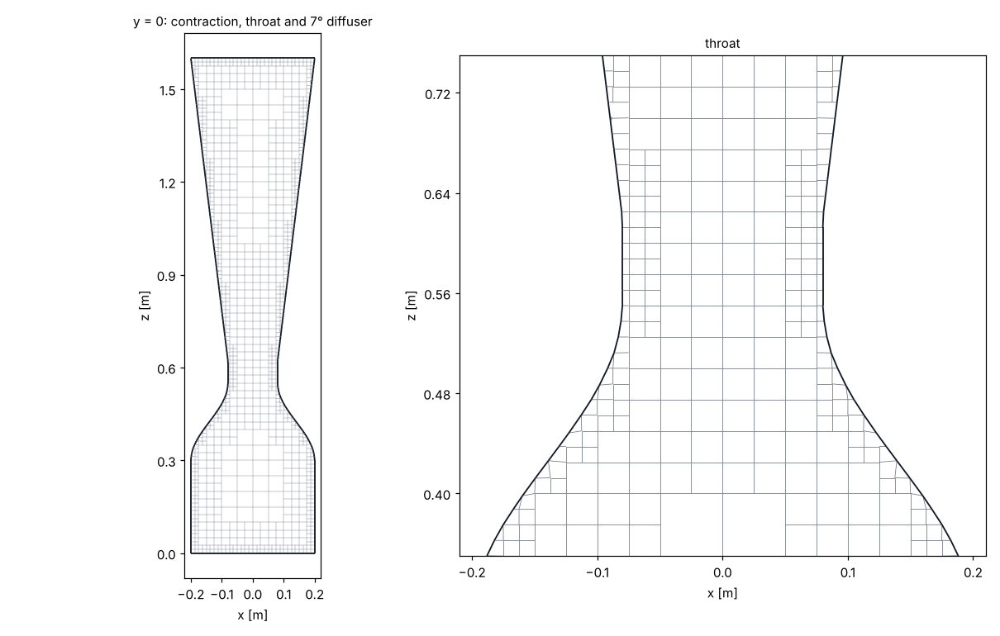

cutmesh
水密な STL の内部に八分木ベースの多面体メッシュを作り、OpenFOAM の constant/polyMesh を直接書き出すメッシャーです。
八分木のセルを STL で直接切断（カットセル）して壁面を作り、攪拌槽のような回転機械の回転ゾーンもメッシュ生成の中で切り出します。

特徴
STL の内部をそのままメッシュに
solid 名ごとに壁パッチを作り、パッチ・特徴線・体積領域ごとに細分化レベルを指定できます。
回転ゾーンをカットで切り出す
円筒（寸法または STL）を切断して、円筒面そのものを内部面にします。cellZone・向きつきの faceZone・MRFProperties の雛形を出力します。
狭い隙間と薄い壁
セルより薄い隙間・壁を検出して細分化し、流体の閉塞や壁の消失（リーク）を防ぎます。隙間の幅に合わせた自動細分化もあります。
境界層
壁パッチにプリズム層を追加します。cutmesh 以外で作った polyMesh にも使えます。
円筒ベースメッシュ
回転機械向けに、八分木の根を軸まわりの同心ブロックにできます。
依存が少ない
Python 3.9+、numpy、scipy だけで動きます。メッシュ生成に OpenFOAM は不要です。Rust 拡張で約 4 倍速くなります。
クイックスタート
git clone https://github.com/mmer547/cutmesh.git
cd cutmesh
pip install -e .
python tools/build_rust.py # 任意: Rust 拡張（cargo が必要）
cd examples/stirred_tank
python make_geometry.py # サンプルの STL を生成
cutmesh meshDict.json # → case/constant/polyMesh設定は 1 つの JSON ファイルに書きます。最小限の例:
{
"domain": "model.stl",
"baseCellSize": 0.01,
"surfaceRefinement": { "default": 2 },
"patchTypes": { "inlet": "patch", "outlet": "patch" },
"case": "case"
}設定項目の一覧と各機能の説明は マニュアル にあります。
実行例



開発中のプロトタイプです。メッシュ品質は checkMesh と同じ式の自前チェックで確認していますが、OpenFOAM 本体での検証は限られています。使う前に手元で checkMesh を実行してください。